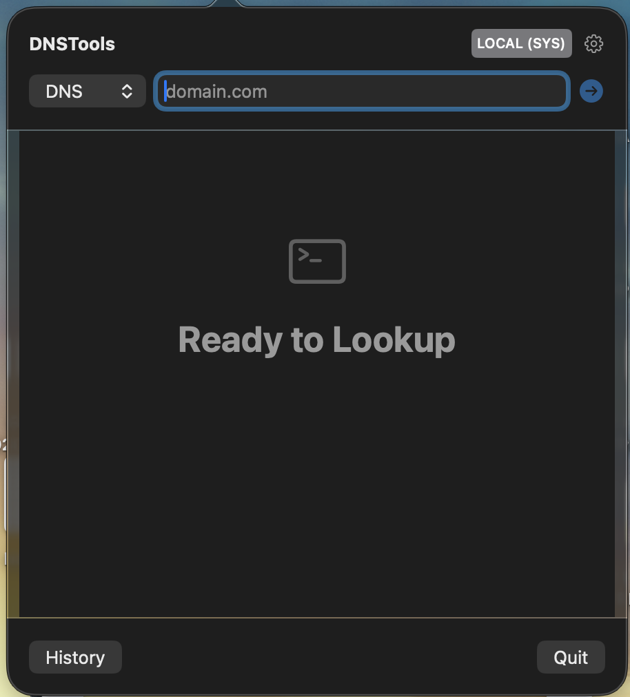
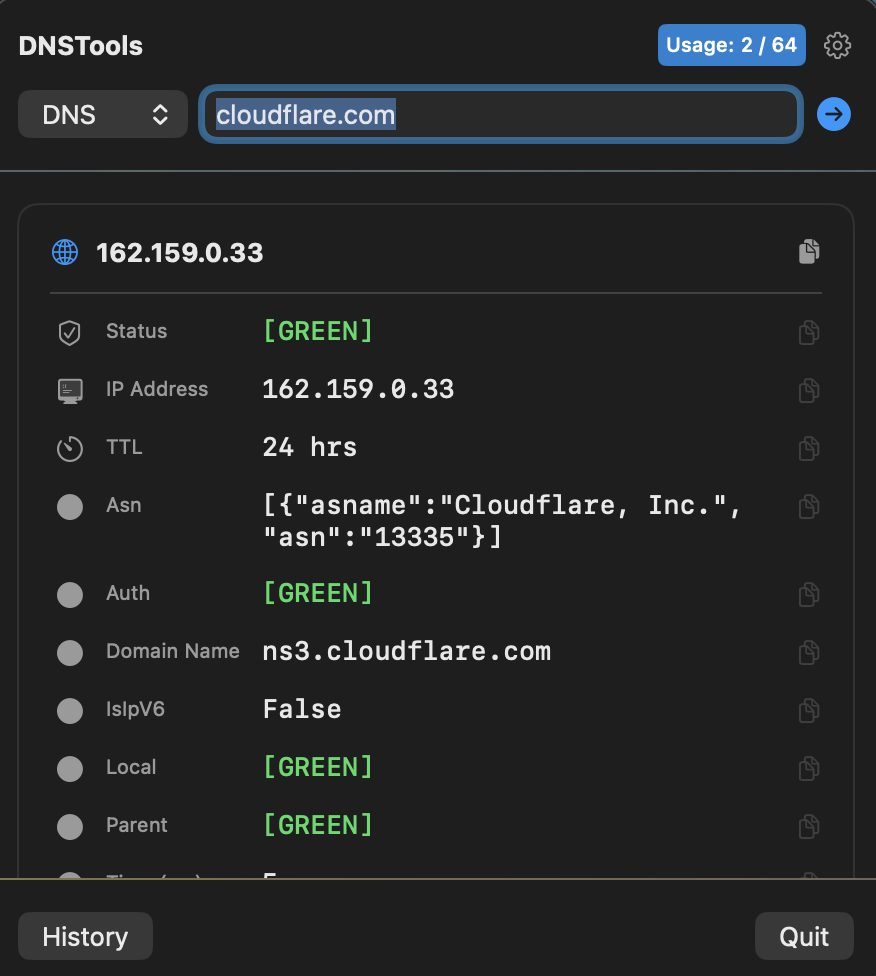
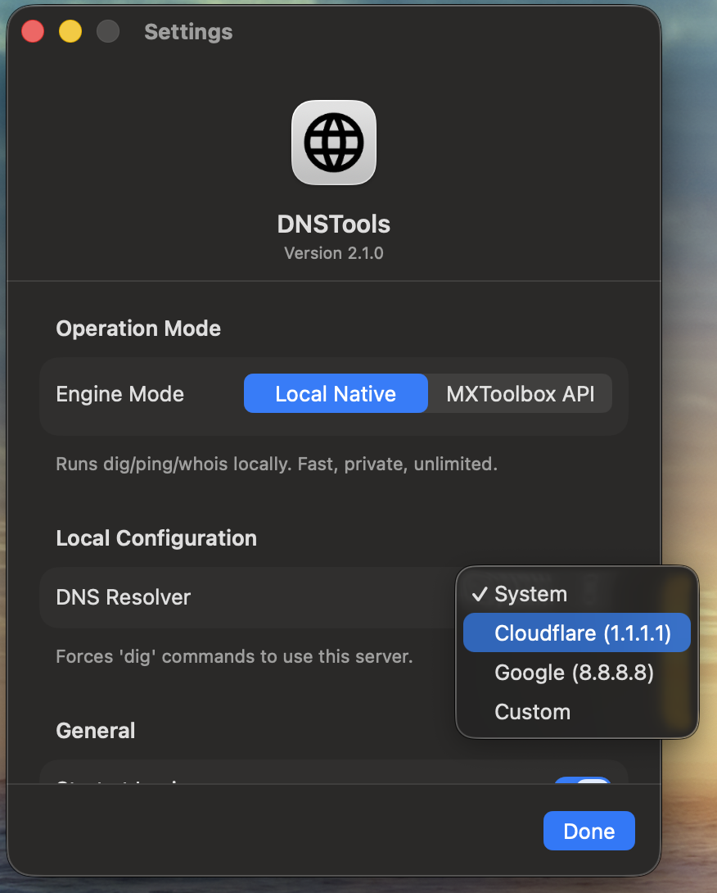
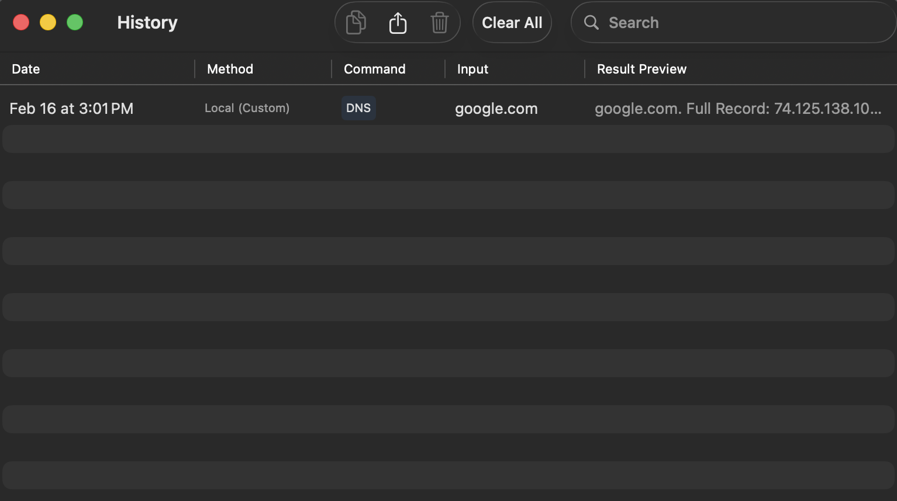

Total Control.
Force local lookups via Cloudflare (1.1.1.1), Google (8.8.8.8), or your own Custom DNS to test propagation and split-horizon networks.
- ✓ Force 1.1.1.1 / 8.8.8.8
- ✓ Custom IP Injection
- ✓ SwiftData History Logging
- ✓ CSV Export
The first hybrid DNS utility for macOS. Bridge the gap between local terminal commands and cloud-based API analysis.
Switch seamlessly between privacy-focused local lookups and deep cloud analysis.
Runs local `dig`, `ping`, and `trace` commands directly on your machine. Zero latency. Completely private.

Unlocks advanced blacklist monitoring, deep health checks, and standardized reporting via the cloud.

Force local lookups via Cloudflare (1.1.1.1), Google (8.8.8.8), or your own Custom DNS to test propagation and split-horizon networks.

Automatic logging of every search with advanced filtering.
